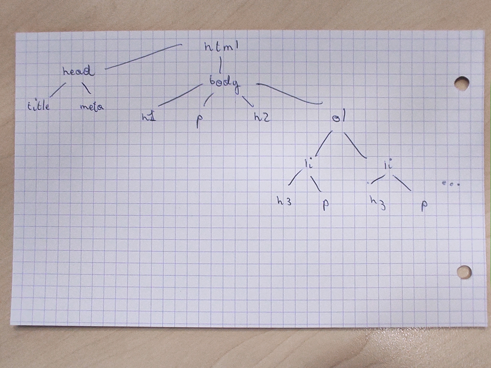

Compte Rendu de TP1
|
| MAX DUCOUDRE
|
| ESIPE INFO 1
|
|
| TP 1 de Programmation Web
|
|
Exercice 1: Document de base
-
A quoi servent les tags h1, h2 et h3 ?
Les tags h1, h2 et h3 permettent d'écrire des titres par ordre d'importance.
-
A quoi sert le tag p ?
Le tag p permet d'écrire des paragraphes.
-
Ajoutez à votre compte rendu la phrase suivante :
Les tags HTML commencent par une balise ouvrante <foo> et finissent par une balise fermante </foo>
-
Comment mettre en gras ou en italique ?
Pour mettre un texte en gras, il faut utiliser les balises <b></b> tandis que pour mettre en italique, il faut utiliser les balises <i></i>
-
Et comment faire pour mettre un mot à la fois en gras et en italique ?
Pour mettre un mot à la fois en gras et en italique, il faut utiliser cette syntaxe : "<b> <i> word </i> </b>"
-
On souhaite que le titre de la fenêtre du navigateur soit "Compte Rendu de TP1", comment faire ?
Pour changer le titre de la fenêtre du navigateur, il faut ajouter la balise <title>Compte Rendu de TP1</title> dans le contenu de la balise <head>
-
Ajoutez un lien (le tag A) vers le cours avec comme titre cours de programmation web.
Lien vers le cours de programmation web
-
Prenez une feuille de papier puis dessinez l'arbre des différents tags correspondant à votre compte rendu.
Attention à bien respecter quel tag se trouve déclaré dans tel autre.
-
Avec votre smartphone (ou celui du voisin), prenez une photo de la feuille de papier sur laquelle vous avez dessiné l'arbre et envoyez-la vous par mail. Puis allez dans vos mails pour récupérer l'image et la sauvegarder sous le nom de mon-arbre-a-moi.jpg.

-
Creér le fichier tp1.css vide et ajouter un lien de votre compte rendu vers le fichier CSS pour que vous puissiez avoir un jolie rendu lorsque, à la maison, vous ajouterez quelques sélecteurs CSS pour que cela soit pas trop moche.
Exercice 2 - Uniform Resource Locator
On cherche à savoir où est hébergé le cours de programmation Web.
-
Ouvrez un navigateur Web et allez à l'URL suivante:
http://monge.univ-mlv.fr/ens/
Quel est le nom de la machine à laquelle vous accédez ?
monge
Quel est le nom de domaine auquel vous accédez ?
univ-mlv.fr
-
Si l'on exécute
host monge.univ-mlv.fr
À quoi correspond la première ligne de la réponse ?
Elle correspond à l'adresse IP correspondant au nom de domaine
À quoi correspond la seconde ligne de la réponse ?
Elle correspond au serveur mail du nom de domaine
-
Dans le navigateur Web, dans la barre contenant l'URL, remplacez le nom de la machine par son adresse IP pour vérifier que cela fonctionne toujours.
A votre avis, pourquoi utilise-t-on des noms pour les machines plutôt que des adresses IP ?
Quand on inscrit l'adresse IP de la machine sur la barre d'URL, on tombe bien sur le site internet de l'université. Utiliser des noms pour les machines rend la navigation plus simple pour les humains.
-
On cherche maintenant à faire la même chose avec la machine hébergeant le cours http://forax.github.io/course/progweb/.
Utiliser la commande host pour récupérer l'adresse IP de la machine correspondant à l'URL.
host http://forax.github.io/course/progweb/
L'adresse IP de cette machine est 185.199.109.153
-
Exécutez la commande traceroute sur l'adresse IP de la machine forax.github.io.
-
Qu'affiche cette commande ?
Cette commande affiche la listes des routeurs auquels il a fallut passer pour communiquer avec la machine forax.github.io
-
Quel est le nom du routeur de sortie (le premier que vous rencontrez) ?
Le nom du routeur de sortie est gwetud.u-pem.fr
-
Comment s'appelle le réseau sur lequel est connecté l'université (le nom de domaine du routeur après le routeur de sortie) ?
Il s'agit du réseau 195.220.83.114
-
Quels sont les autres réseaux qui sont traversés ?
vl1488-te0-1-0-2-ren-nr-marne-rtr-091.noc.renater.fr, vl630-te0-0-0-11-ren-nr-jussieu-rtr-091.noc.renater.fr, vl630-te0-0-0-11-ren-nr-jussieu-rtr-091.noc.renater.fr
-
Nous allons nous intéresser au site Web http://www.mai-ko.com/.
Exercice 3 - Service HTTP
On va faire quelques requêtes HTTP à la main pour voir comment le protocole HTTP marche.
-
On cherche à savoir à quoi correspond le fichier /etc/services. Pour cela, dans le terminal tapez la commande man services
Le fichier services correspond à l'affectation des ports UDP et TCP sur les différents services installés sur la machine
-
Utilisez la commande grep sur le fichier /etc/services pour déterminer le numéro du port TCP correspondant au service http.
cat /etc/services | grep http
Il s'agit du numéro de port TCP 80
-
Maintenant que l'on sait quel est le numéro de port TCP de HTTP,
utilisez nc pour vous connecter au serveur Web de la machine www.example.com
en utilisant le port TCP correspondant au protocole HTTP puis tapez la requête suivante : (commande "nc www.example.com 80")
GET / HTTP/0.9
Puis ajouter deux retours à la ligne (RETURN, ENTER, etc)
Quel est le header (l'entête, en français) de la réponse ?
HTTP/1.0 505 HTTP Version Not Supported
Content-Type: text/html
Content-Length: 379
Connection: close
Date: Wed, 30 Nov 2022 18:57:55 GMT
Server: ECSF (nyb/1D35)
Note: le serveur envoie une réponse composée de deux parties, séparées par une ligne vide :
-
le header qui est ce qui nous intéresse pour le moment,
-
puis le contenu HTML de la page Web, à laquelle nous nous intéresserons plus tard.
-
A quoi correspondent les 3 valeurs sur la première ligne de l'entête ?
- La première ligne correspond au code de retour de la requête que nous a fourni le serveur (ici 505 signifiant que le site ne supporte pas html 0.9)
- La seconde ligne correspond au type de ressource reçu, ici du texte au format html
- La troisième ligne correspond à la taille de ce qui a été envoyé en octets
-
A quoi correspond la valeur de Content-Type ?
La valeur Content-Type correspond à l'attribut désignant le type et le format de la ressource reçu par le client
-
A quoi correspond la valeur de Content-Length ?
La valeur Content-Lenght correspond à l'attribut désigant le nombre d'octet contenu par la ressource reçu par le client.
-
Faites la même analyse mais avec la requête
GET / HTTP/1.1
Host: www.example.com
Le résultat de la requête est différent, ici le code de retour est 200 OK, ce qui veux dire que la requête est un succès
HTTP/1.1 200 OK
Age: 580463
Cache-Control: max-age=604800
Content-Type: text/html; charset=UTF-8
Date: Thu, 01 Dec 2022 11:29:58 GMT
Etag: "3147526947+ident"
Expires: Thu, 08 Dec 2022 11:29:58 GMT
Last-Modified: Thu, 17 Oct 2019 07:18:26 GMT
Server: ECS (dcb/7F82)
Vary: Accept-Encoding
X-Cache: HIT
Content-Length: 1256
-
Pourquoi dans la version 1.1 du protocole HTTP, on doit fournir le Host ?
Car la spécification de la version 1.1 impose d'ajouter le champs host correspondant au nom de domaine du site ciblé par la requête.
-
Enfin, sur la machine www.forax.org, faite la requête suivante et analysé la réponse
GET / HTTP/1.1
Host: www.forax.org
À quoi correspond la valeur de Location ?
La valeur location correspond à l'endroit où est hébergé le serveur.
Exercice 3 - Service HTTP
On va faire quelques requêtes HTTP à la main pour voir comment le protocole HTTP marche.
-
Changer votre compte rendu pour que chaque question / réponse de votre compte-rendu soient
numéroter automatiquement en utilisant les balises OL / LI.
-
Au début de votre compte rendu, on va ajouter un cartouche indiquant votre nom, votre formation,
et le numéro du TP et le nom de la matière sous forme d'une table HTML.
En ascii-art, cela donne
-----------------------------------------
| | MICHEL PREFERERESTBASH |
-----------------------------------------
| ESIPE INFO 1 | |
-----------------------------------------
| TP 1 de Programmatio Web |
-----------------------------------------
On veut un rendu le plus identique possible.
On peut noter que la dernière ligne est sur 2 colonnes, allez chercher dans la spécification du
Standard HTML5
comment faire et indiquer dans votre compte rendu comme vous avez fait pour trouver la réponse
et où elle se situe dans le document (oui, je sais c'est en Anglais, mais vous êtes grand maintenant).
La spécification pour faire des tables en HTML5 se situe ici
-
Vérifier que votre compte-rendu passe bien le validateur de HTML
validateur du W3c
Si ce n'est pas le cas, modifier le HTML !
Conclusion personnel
En conclusion personnel, je peux dire que ce TP m'a fait comprendre l'importance de la spécification du HTML (et du validateur HTML) pour avoir un code propre. Il m'a aussi appris à faire plus attention au tag que j'utilise, c'est-à-dire les fermer dans le bonne ordre, les placer au bon endroit, leur réel intérêt...
La partie réseau du TP complète nos connaissances lié au cours de réseau sur le protocole HTTP.